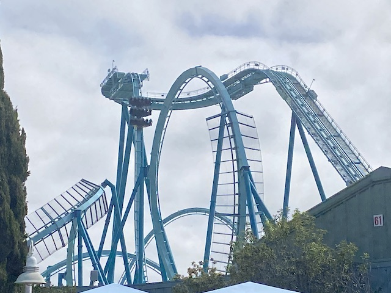
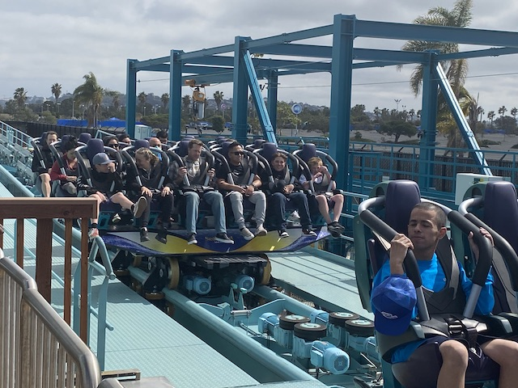
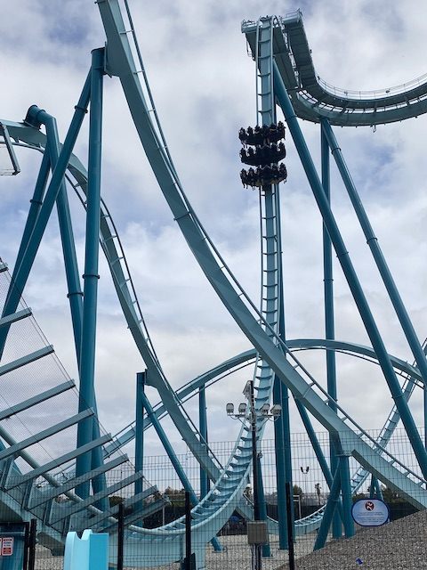
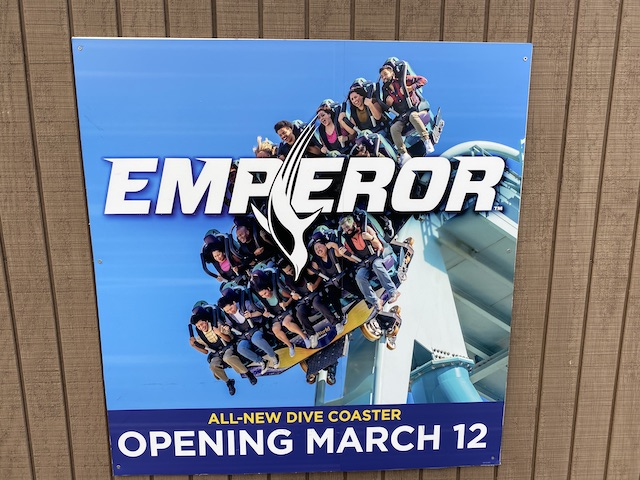
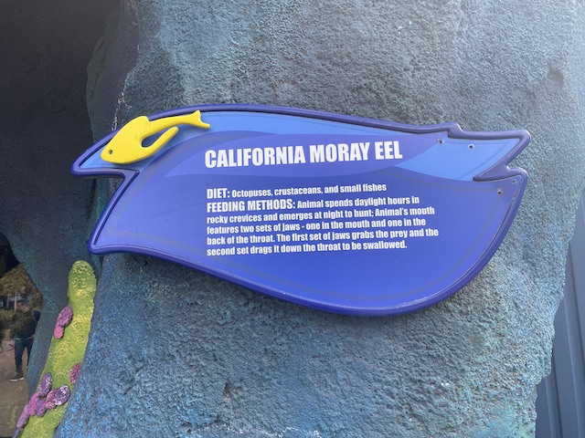
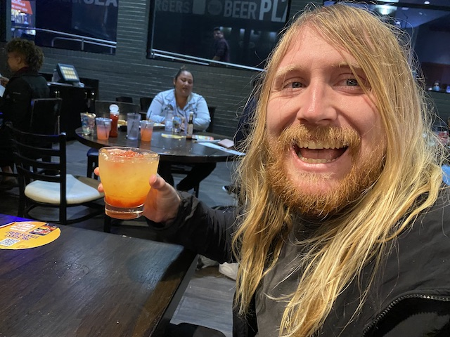
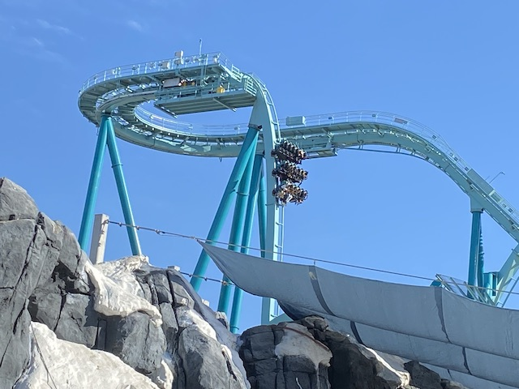
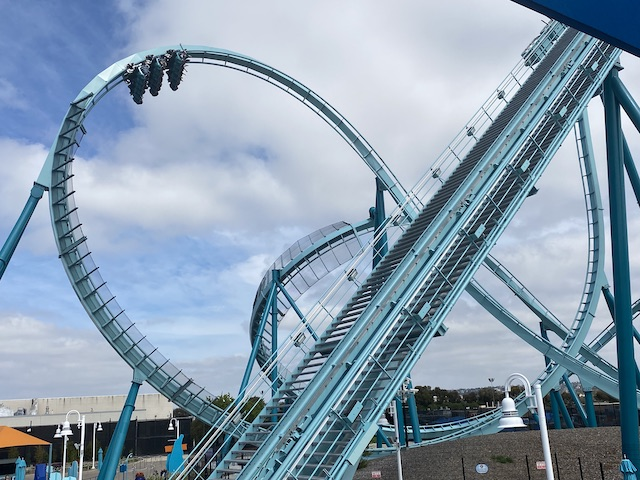
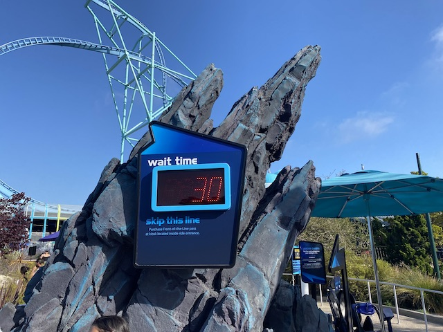

| |
Emperor Preview
 All right. So SeaWorld/Busch decided that for 2020, they were going to install a new coaster at every single park of theirs. And with the exception of Texas Stingray (I am really overdue to go back to Sea World San Antonio), they were all delayed for obvious reasons. However, I was surprised that the coasters didn't open up in 2020 when the theme park world reopened, but rather in 2022. It ESPECIALLY felt like they just waited around on the Florida coasters (How long was Ice Breaker in a technical preview before it offically opened to the public?).
All right. So SeaWorld/Busch decided that for 2020, they were going to install a new coaster at every single park of theirs. And with the exception of Texas Stingray (I am really overdue to go back to Sea World San Antonio), they were all delayed for obvious reasons. However, I was surprised that the coasters didn't open up in 2020 when the theme park world reopened, but rather in 2022. It ESPECIALLY felt like they just waited around on the Florida coasters (How long was Ice Breaker in a technical preview before it offically opened to the public?).
 Well, no more waiting around. The time has officially come to get on this ride.
Well, no more waiting around. The time has officially come to get on this ride.
So the Emperor Preview is only avaliable to ride for Season Pass holders. Luckily, I just bought myself a Sea World Platinum Pass this year. No, I didn't buy it solely to ride it a couple weeks early (I would've just waited if that was the case). I didn't even buy it because I planned on going a ton (though I did go a decent amount this year). No, the real reason I bought the platinum Season Pass was because the original plan was to do Florida this year. Unfortunately, that trip got postponed due to a lot of financial troubles (and Florida probably is the most expensive domestic trip you can do). Well, that just means I get to buy this pass again for 2023 and do the trip then (I will rip my own hair out in frustration if this gets postponed yet again). Well, at least my pass got a lot of good use in a lot of visits. So it still paid for itself.
Always gotta start out the visit with a little stop from our Doctor Fish friends.
Wait. That's not why we're here. Why are....sick of this joke. You know why.

It has been brought to my attention that there is a major roller coaster in Southern California that I have not ridden yet. I must correct this glaring error at once. =)
Got my special button designating me able to ride Emperor during its Season Pass preview.
 I've been staring at this coaster for over 2 years now. Time to finally hop onboard.
I've been staring at this coaster for over 2 years now. Time to finally hop onboard.
 Some fun little penguin facts you can learn while waiting in line for Emperor.
Some fun little penguin facts you can learn while waiting in line for Emperor.

So Sea World. How long until you actually build a station for Emperor?
I gotta admit. This coaster was better than I expected. I was impressed.

The first drop was a lot of fun. But....it's a Dive Coaster. That's to be expected.
 What I was impressed with was the rest of the ride. It actually was pretty forceful (especially by new B&M standards) and felt more like a complete ride and not nearly as gimmicky as I expected.
What I was impressed with was the rest of the ride. It actually was pretty forceful (especially by new B&M standards) and felt more like a complete ride and not nearly as gimmicky as I expected.
 No seriously. There's actually some nice whip in that final corkscrew and some good Gs in that curved drop out of the inline twist.
No seriously. There's actually some nice whip in that final corkscrew and some good Gs in that curved drop out of the inline twist.

Honestly, my only complaint is that the ride is definately on the short side. Overall, a big thumbs up for Emperor from Incrediblecoasters.
Sorry Jason.
 Bah! Screw the fact that there's no water! Turn it on anyways! >=)
Bah! Screw the fact that there's no water! Turn it on anyways! >=)
It may not be the best ride at the park, but Electric Eel is still a really fun ride.
"Hey look! I got myself a shark bodyguard! Out of my way bitches before I unleash Jaws on you!"
No! I'm not wasting my loose change on idiotic superstitions or the fun of watching it go down the drain! It's for charity! See look!
The simulator may be gone, but if you still want to see some arctic animals, here you go.
In honor of the new penguin-themed coaster, we had to check out the penguins they had here.
Hey! Where are the royalties I'm supposed to be getting from Emperor?
"It even says Emperor in our name! Now pay up!"
The animals do not appreciate the drum solo you're performing on the glass with your fingers. You are a really sh*tty finger drummer.

Ooh. I'd like to see some Moray Eels.
We may not be electric, but we can still f*ck you up.
Emperor is not only the new addition to Sea World for this year. There's also this new resteraunt that'll open up later.
Oh yeah. The one major coaster we haven't ridden today. Gotta change that.
Still the best place to eat in the park.
It was good, but GOD DAMN!!! It was EXPENSIVE!!! It was a rude reminder as to why I generally try and eat lunch at some fast food place before arriving at Sea World.
OK. I have some good news. It finally feels like the tide of Blackfish and associated properties is waning, which makes me super happy. No, it's not people specifically rallying for Sea World. But rather, people are just rallying in support of zoos and aquariums in general. And for that, I have to give a special thanks to Betty White, who managed to reverse peoples opinions when the news covered how she was a big advocate for zoos, highlighting all the work she did for the L.A Zoo, and raised a sh*tload of money for zoos in the wake of her death (So sad you just barely missed turning 100). Thank you for your work Betty White, both in film, and for doing REAL animal activism and not the Pop-Animal Activism I've complained about multiple times on this site.
 *Sigh* This is my 4th try, and Tidal Twister is STILL closed.
*Sigh* This is my 4th try, and Tidal Twister is STILL closed.
Please stay long enough and open up so I can at least try it once and not have it be an intersting ride at a home park that I never got to try (Spoiler Alert: I did).
Nope. Not dumb enough to ride Shipwreck Rapids in THIS kind of weather.
*gasp* They're actually real!? I thought they were just tacky lawn ornaments!
That does sound like it'd be a lot of fun. Maybe one of these days when I'm not broke and in Financial Lockdown.
Remember when this ride was noteworthy for being one of the few rides at Sea World San Diego? So do I.
And it's gonna have a credit. And my season pass gets me in here. I see some future credit whoring.
 So our time at Sea World has ended. But we still have more fun tonight going out to Dave'N'Busters with a San Diego friend of ours.
So our time at Sea World has ended. But we still have more fun tonight going out to Dave'N'Busters with a San Diego friend of ours.

"No officer. I have no plans of driving. I'm perfectly able to drink this alcoholic drink".
"For the millionth time Kevin. I'm an expert at Skeeball. Now shut up and let me concentrate".
All right. We're back down in San Diego. And while we're here, let's pose with the gay gummy bear.
So we were invited to brunch the next morning. And hey. This is a great place to stop before another fun day at Sea World.
It was a really good brunch. Highly recommended for anyone looking for a good place to eat in San Diego.

Hey look. It's actually open this time and not just a preview for Season Pass holders.
And of course, Sea World is teaming up with Penguins International, a group that does real animal work and helps protect and do conservation of penguins. Go check them out if you're a fan of Penguins. We endorse them at Incrediblecoasters.

I know I've given a lot of my thoughts on this ride. However, if you want full details, we just released an Emperor Review that goes over this in much greater detail.
Hello Mr. Penguin. Glad to see another fan of the site.
Look what we are able to do thanks to our Season Pass. =)
Aww. Cute couple photo from the Skyride.
Sadly, this is not the Incrediblecoasters Stingray fan who wouldn't leave us alone in 2012.
So this may sound crazy, but I think I actually switched my opinion from thinking this ride is underrated to now thinking its overrated.
I still really like this ride. It's still a FANTASTIC family coaster. Very fun, some nice forces, kind of whippy in the 2nd half. Still a really fun ride that I think is GREAT for Sea World San Diego. However, people have REALLY grown to like this ride. And I'm sorry. This ride is really fun and all, but it's not better than a strong B&M Dive Coaster with some good forces. Emperor > Manta (which is shockingly a minority opinion from what I've seen).
So today is the very last day of the Clyde & Semour Show. And so....we might as well get the final glimpse of it before it retires.
Oompa-Loompa Doompa-Dedoo. I've got another puzzle for you.
So I was never a huge fan of this show and repeatedly expressed this. I honestly expect the Sea Lion exhibit, much like the Orca exhibit probably will be a better replacement. Though I have speculations that make me annoyed, they're just speculations. And anyways, thanks for all the hours of show Clyde and Semour.
So long assholes! I'm now offically retired! =)
Time to get some ariel shots from the Sky Tower from Sea World San Diego.
Electric Eel and Emperor from the Sky Tower.

Yeah. Sea World is pretty busy. Normally wouldn't bother. But it's the only major ride we haven't done today.
BOOM!!! EJECTOR AIR POP!!!
Something tells me the Sea Turtles have a more nutrious diet than I do.
Damn! They're protected by the glass! Guess I'll just have to settle for eating my stupid fishheads.
Hmm. Don't think we've ever really explored the Garden of Discovory. Might as well check that out.
Meh. It was nothing special. Kind of underwhelming. Well, thanks for some fun Sea World. Your new B&M is a lot of fun and a big hit. Look foreward to taking several more visits this year.
Home
|